| |
|
VERİ VE KONTROL RAPORLARI
|
Özel veri ve kontrol raporları şunlardır: Güzergah Özeti
Güzergah Kesişimi Özellikler .vol Dosyası Verileri Çizgi ve Nokta Envanteri Noktasal İşaretleme Güzergah Ekleri Tip Kesitler Yönetmelik Kontrolü Bulon Raporu Hendekler ve Kafa Hendekleri Arazi Enkesitleri Sanat Yapıları Özel Boykesitler Sanat Yapıları (Viyadük/Tünel) Plan Geometrisi Eğim Kontrolü Üstyapı Kesimleri Gabari Kontrolü Kot Kontrolü Şeve olan mesafe kontrolü Sabit Mesafelerdeki Kotlar Sabit Kodlardaki Kırmızı Kot Farkları Radyal/Normal Mesafeler Uygulanan Tip Kesitler Sorgu 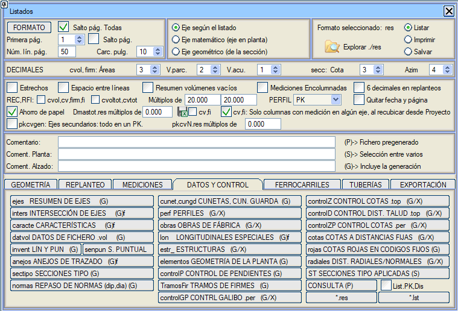
Güzergah Özeti GÜZERGAH ÖZETİ raporu (ejes.res), her güzergah için ait olduğu grubu, güzergah numarasını, başlangıç KM'sini, bitiş KM'sini, uzunluğunu, hesaplama aralıklarının veya kısıtlı hesaplama bölgesinin başlangıç ve bitiş KM'sini, hesaplama aralıklarına veya kısıtlı hesaplama bölgesine göre uzunluğunu, güzergahın adını veya başlığını, ENKESİT (ALZADO) menüsünden ([?] butonu) girilebilen .vol dosyasında belirtilen yorumları ve her güzergahın proje hızını içerir. Gruplara göre toplam uzunlukları ve tüm projenin toplamını elde etme imkanı. Güzergah Kesişimi GÜZERGAH KESİŞİMİ raporu (inters.res), plandaki güzergahlar arasındaki tüm kesişimlerin KM'lerini, X, Y, Z koordinatlarını, güzergahların ve arazinin kotlarını, kot farklarını ve her güzergahın azimutlarını içeren bir rapor oluşturur. Kesişimleri aramak için güzergahların uçlarında uzatılmasına neden olan bir tolerans eklemeye izin verir. Bu rapor sadece aktif gruplara ait güzergahları analiz eder. Bağlayıcılar veya etiketler aracılığıyla güzergahlar arasındaki bağlantıları rapora eklemek, Bağlı güzergahları ekle kutucuğu etkinleştirilerek mümkündür; bu durumda güzergahlar arasındaki mesafeyi içeren bir sütun eklenir. Diyalog kutusu ayrıca, kesişim noktalarının koordinatlarını, her güzergahın numarasını, KM'sini ve azimutunu, güzergahlar arasındaki kot farkını ve ikinci güzergahın mutlak kotunu etiketleme imkanı sunar. KM'ler Kazık No Olarak kutucuğu ile, kesişim noktalarının etiketlenmesini KM yerine Kazık Numarası olarak elde ederiz. Bu menünün tanımı kaydedilebilir  , yüklenebilir , yüklenebilir  veya sıfırlanabilir veya sıfırlanabilir  . .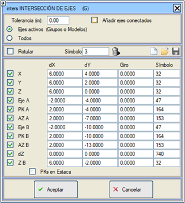
Özellikler ÖZELLİKLER raporu (caracte.res), güzergahların plan ve boykesit özelliklerinin gruplara göre bir özetini (uzunluklar, maksimum ve minimum eğimler ve yarıçaplar, hızlar, kesim ve düşey kurp sayısı vb.) içerir. Bu raporda, sadece plandaki güzergahın başlangıç ve bitiş KM'leri arasında kalan kırmızı kot kesimi dikkate alınır ve bir güzergahın kendisiyle olası kesişimleri dikkate alınır. Sağa ve sola toplam kurp sayısı ve aliyman sayısı hakkında bilgi sahibi olacağız. 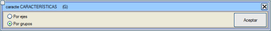
.vol Dosyası Verileri .VOL DOSYASI VERİLERİ raporu (datvol.res), mevcut güzergahın veya tüm aktif güzergahların numarasını ve adını içeren, özelleştirilebilir bir rapor oluşturmayı sağlar. Bu rapora, kullanıcının ilgili kutucuğu etkinleştirerek istediği .vol dosyası verileri eklenebilir (varsayılan olarak deverler, genişlikler, yardımcı taşıt yolları ve hesaplama bölgeleri verileri etkinleştirilmiş olarak gelir). Hesaplama aralıklarında, yazdırılan km'lerin KM Eşitliklerinden türetilen kullanıcı KM'leri olması belirtilebilir. 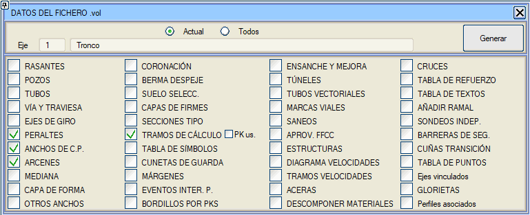
Çizgi ve Nokta Envanteri ÇİZGİLER VE NOKTALAR raporu (invent.res), bir projeyle ilişkili bilgi çıkarımını tamamlamak için tanımlanmıştır, çünkü kullanıcı tarafından tanımlanan belirli çizgi ve nokta tiplerinden yola çıkarak projenin her bir güzergahıyla ilişkili öğelerin bir envanterini yapmayı sağlar. (aynı modelde olmalıdırlar) Ayrıca, her nokta için eksene olan mesafesi ve kapalı çizgiler durumunda alanın alanı da listelenir. Tip seçimi sayısal olarak veya tıklayarak yapılabilir. Çizgiler ve noktalar bölümündeki Tümü butonu, listeyi seçilen güzergah veya tüm aktif güzergahlar için mevcut tüm çizgi/sembol tipleriyle doldurmak için kullanılır. 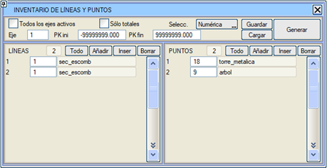
Her bir güzergah için bir KM aralığı sınırlayarak bir rapor oluşturulabilir veya aktif gruplara ait tüm güzergahları içeren bir rapor oluşturulabilir. Noktasal İşaretleme Projenin Noktasal İşaretleme bilgilerini içeren bir rapor oluşturur. Her güzergahın sonunda her bir hücrenin kaç kez göründüğü ve tüm güzergahların son bir özeti belirtilir. 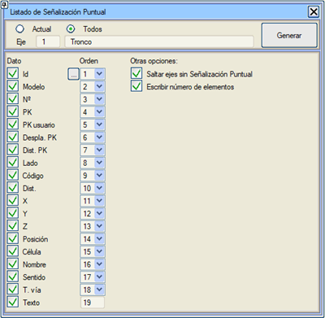
Güzergah Ekleri GÜZERGAH EKLERİ raporu (anejos.res ve Anejos_Trazado.xlsx), oluşturulması için GENEL sekmesinde bir .dia yönetmelik tablosu beyan edilmiş olmasını gerektirir ve şunları içerir:
Tip Kesitler TİP KESİTLER raporu (sectipo.res), beyan edilen tüm tip kesitlerin, adlarıyla ve güzergahlara göre düzenlenmiş bir listesini ve tip kesitlerin uygulama bölgelerini oluşturur. Yönetmelik Kontrolü Bu rapor, güzergahın ilgili tasarım tablosunu beyan etmiş olması koşuluyla, her bir güzergah için veya tüm aktif güzergahları içeren bir raporla, plan ve/veya boykesit yönetmeliği kontrol sonuçlarını oluşturmayı sağlar. Birleşik dosya normas0.res olarak adlandırılır, ayrıca her bir N güzergahı için bir normasN.res dosyası oluşturulur. 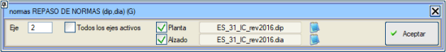
Ayrıca, hesap tablolarında işlenmek üzere ./res raporlar klasöründe norma_N.xlsx ve normaalz_N.xlsx raporları da oluşturulur. Bu rapor tüm aktif güzergahlar için oluşturulduğunda (normas0.res), ayrıca iki rapor daha oluşturulur: norma_0.xlsx ve normaalz_0.xlsx, sırasıyla tüm aktif güzergahlar için plan ve boykesit kontrolünü xlsx formatında içerir. Çalışma Plan/Tasarım/Yönetmelik Kontrolü veya Boykesit/Tasarım/Yönetmelik Kontrolü'nden yapıldığında, Istram veri gridi açık kalır. Raporlar/Veri ve Kontrol/Yönetmelikler'den yapıldığında, son grid, Yapılandırma/Tercihler/Raporlar'da seçilen seçeneğe bağlı olarak açık veya kapalı kalacaktır. Bulon Raporu Bir tünelin enkesitlerine, bir dizi değişkene dayanarak bulonları yerleştirmek için bir özellik eklenen rapor:
Oluştur'a tıklandığında, değiştirilmiş verilerle yeni bir .per dosyası oluşturma veya mevcut bir dosyanın üzerine yazma seçeneği sunulur. Ayrıca, yelpaze numarasını, her yelpaze içindeki bulon numarasını ve her bulonun başlangıç ve bitişinin genel koordinatlarını içeren bir .csv dosyası oluşturulur. Bulonların oluşturulmasında, gösterimleri için özel bir çizgi kullanılır. Enkesitin belirtilen yüzeyi, bulonların yerleştirildiği yüzeydir. Hendekler ve Kafa Hendekleri HENDEKLER VE KAFA HENDEKLERİ raporu (cunet.res, cungd.res), belirtilen güzergah ve kesime veya tüm aktif güzergahlara (ilgili kutucuk işaretlenerek) ait, hem yarma hem de dolgudaki hendeklerin veya kafa hendeklerinin (diyalog kutusunda seçildiği gibi) bir raporudur. 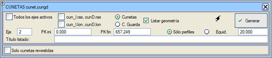
Aşağıdaki seçeneklerle, kırmızı kot tasarımında, sağda veya solda (S, D) kullanılmak üzere .ras veya .lon uzantılı dosyalar da oluşturulur: cun_S.ras, cun_D.ras
cun_S.lon, cun_D.lon
KIRMIZI KOTLAR menüsünden bu verileri yüklemek ve gerekirse daha sonra değiştirmek mümkündür. Raporda, eksene olan mesafeler, X, Y ve hendek tabanı kotu, ara uzunluklar ve boyuna eğimler yer alır; kaplamalı hendekler, birikimli uzunluğun arkasında bir "K" ile ayırt edilir. Raporun sonunda ayrıca, kaplamalı ve kaplamasız hendeklerin toplamını ayrıştırarak her bir taraf için toplam hendek uzunluğu da yazdırılır. Bu rapora iki veri eklenir:
Ayrıca sadece kaplamalı hendekleri listeleme imkanı da vardır. Geometriyi listele , kullanılan hendeklerin genişlik, yükseklik ve şev ölçülerini raporun sonunda yazdırır. Kafa hendeklerinin geometrisi de listelenir. Enkesitler ENKESİTLER raporu (perf.res), her bir enkesit için KM'sini, eksene olan mesafesini ve enkesitin her bir noktasının kotunu içeren raporu, tek bir güzergahta veya projenin tümünde ekranda sunar. 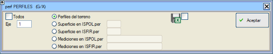
Rapor, perf#.res adıyla (# güzergah numarasıdır) veya isteğe bağlı olarak .xls formatında kaydedilir: Raporu elde etmek için mevcut seçenekler şunlardır:
Sanat Yapıları SANAT YAPILARI raporu (obras.res), projenin sanat yapılarını içerir. 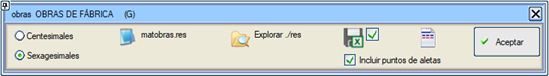
Azimut ve şevlilik açısı için açının grad mı yoksa derece mi olduğu önceden ayarlanabilir. Bu rapora, sanat yapısı ekseniyle kesişimdeki ana güzergahın kırmızı kotu sütunu eklenmiştir. 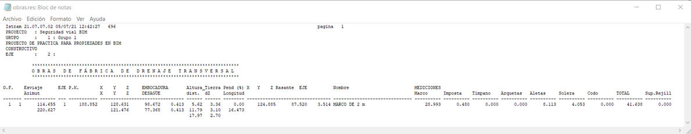 matobras.res: Proje hesaplandığında oluşturulan matobras.res (sanat yapılarının kazı ve dolgu malzemeleri) dosyasını düzenlemek için erişim. 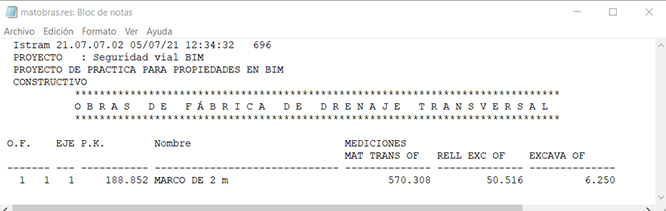
Kanat noktalarını dahil et: Eğer bu bayrak etkinleştirilirse, kanatların 11 karakteristik noktasının koordinatları ve kanatların uzunluğu .res dosyasına dahil edilir. Aynı şekilde, Excel kutucuğunun oluşturulması etkinleştirilirse, bu noktalar ve uzunluklar da .xlsx dosyasına dahil edilecektir. Özel Boykesitler ÖZEL BOYKESİTLER raporu (lon.res), iki farklı boykesit raporu ve dosyası oluşturmayı sağlar:
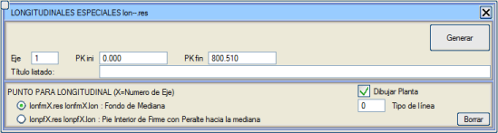
Sanat Yapıları (Viyadük/Tünel) SANAT YAPILARI raporu (estr_.res), SANAT YAPILARI menüsünden çıkarılan bilgileri içerir: yapı tipi, taşıt yolu, KM, arazi ve kırmızı kot, yapının başlangıç, orta ve bitiş noktalarındaki güzergahın X,Y koordinatları, azimut, plandaki ve gerçek (3D) uzunluk ve yapının adı. Ayrıca, viyadükler ve üstgeçitler durumunda, ayakların KM'leri de görünür. 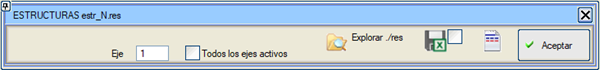
Bu rapor, aynı anda tüm aktif güzergahlar için de oluşturulabilir, bu durumda bu güzergahlarla estr_0.res dosyası oluşturulur. Bu rapordan:
PLAN GEOMETRİSİ raporu (elementos.res), tüm aktif güzergahların plan güzergahını oluşturan elemanların geometrik özelliklerinin bir listesinden oluşur. Hem .res hem de .xlsx formatında elde edilebilir. 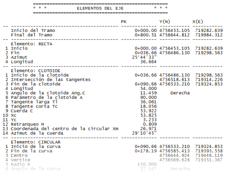
Eğim Kontrolü Bu rapor, bir dizi güzergahta, boyuna eğimi belirli bir değere ulaşan kesimleri analiz etmeyi sağlar. 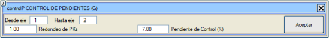
Üstyapı Kesimleri Bu seçenek, projede kullanılan tüm farklı üstyapı kesitlerini ve tüm aktif güzergahlar için hangi kesimlerde uygulandıklarını içeren bir rapor oluşturur. 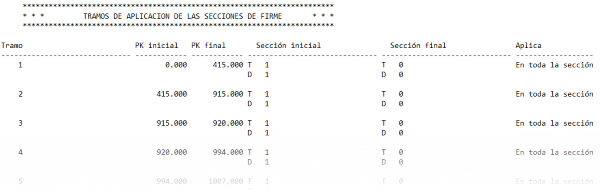
ControlGP GABARİ KONTROLÜ .per'den Bir enkesit dosyası verildiğinde, örneğin bir yüzeyle tanımlanmış bir tünel, her bir KM için, kırmızı kota göreli iki kot arasında bulunan, eksene minimum mesafedeki her iki taraftaki noktaları hesaplar. Kot Kontrolü KOT KONTROLÜ raporları (controlZ.res), kotları bir referans yüzeyine göre iki farklı şekilde karşılaştırmayı sağlar:
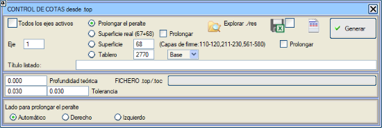
Proje kotunun belirlendiği yüzeyi seçmek için birkaç olasılık vardır:
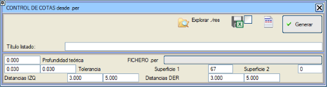
.top'tan şeve olan mesafe kontrolü ŞEVE OLAN MESAFE KONTROLÜ raporu (controlD.res), KM'nin eksen üzerine yansıtıldığı noktadan yarma veya dolgu şevine olan yatay mesafeyi inceler. Rapor, kullanıcının seçmesi gereken bir .top/.toc dosyasını referans alır. Uzat kutucuğu, dolgu şevlerini dolgu eteğinin altından ve yarma şevlerini yarma başının üstünden uzatarak çözümü aramayı sağlar. Eğer çözümü bu uzatılmış kesimde bulursa, raporda bunu bize belirtecektir. 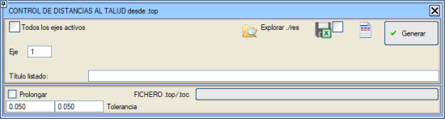
Sabit Mesafelerdeki Kotlar SABİT MESAFELERDEKİ KOTLAR raporu (cotas.res), önceden belirlenmiş eksene olan mesafelerde, arazi yüzeyinin, projenin (subrasante) ve kırmızı kotun kotlarını ve aralarındaki kot farklarını çıkarmayı sağlar. Bu raporda ayrıca, noktanın X,Y koordinatlarını içeren iki sütun da elde edilir. Son noktayı ekle kutucuğunu etkinleştirerek, program, eksenden olan mesafenin yanı sıra proje yüzeyinden olan mesafeyi de alır. 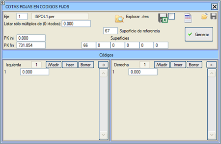
Varsayılan olarak mevcut güzergahın çözüm enkesit dosyası (ispol#.per, # güzergah numarasıdır) kullanılır, ancak Dosya seç seçeneği etkinleştirilerek kullanılacak dosya seçilebilir. Tüm enkesitleri veya sadece belirli bir değerin katlarını (ayrıca ilk ve sonuncuyu) listeleme imkanı. Yüzeylerin adını değiştirmek de mümkündür. Raporun başlıklarını düzenlemeye izin verilir. Veri dosyasının uzantısı .cdf ->.zdf olarak değiştirilir. .xlsx formatında oluşturmaya izin verilir. Sabit Kodlardaki Kırmızı Kot Farkları Bu rapor, kullanıcı tarafından tanımlanan sabit kodlarda ve altı farklı yüzeyde bir referans yüzeyinden kırmızı kot farklarını yazdırır. Bu raporu hesap tabloları için .xlsx formatında oluşturma imkanı. Ayrıca başlıkları düzenleme imkanı da mevcuttur. 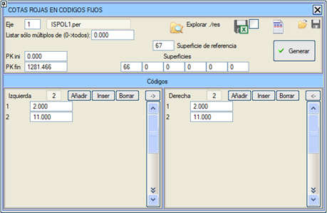
Radyal/Normal Mesafeler radiales.res Raporu: Bir .per dosyasında radyal mesafe kontrolü: İki tünel takip tipi yüzey arasındaki radyal mesafeyi ölçmeyi sağlar, .res ve .xlsx raporları oluşturur ve .per dosyasına mesafe değeri olan semboller eklemeyi sağlar. Ölçüm, her iki yüzeyin noktalarında yapılabilir ve açısal referans, bir tanesinin ortalaması veya eksen ve kırmızı kotun kotuna göreli bir değer olarak alınabilir. Uygulanan Tip Kesitler UYGULANAN TİP KESİTLER raporu (ST.res), eksenin her iki tarafına uygulanan tip kesiti KM'lere göre belirtir. Bu rapor, ENKESİT (ALZADO)'dan veya PROJE'den hesaplandığında her bir güzergah için otomatik olarak oluşturulur, bu nedenle zaten oluşturulmuş bu dosyalar arasından seçim yapmak yeterlidir.  Raporda, platformda, hendekte, yarmada veya dolguda uygulanan tip kesitte bir değişiklik olduğunda veya yarmadan dolguya bir değişiklik olduğunda boş bir satır eklenir. Bu şekilde, aynı tipolojiye sahip tüm enkesitler gruplandırılmış olur. Sorgu 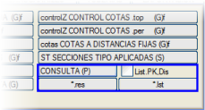[SORGU (P)] butonu, kullanıcının interaktif olarak yaptığı farklı sorgulardan (örneğin KM-mesafe seçeneği, KIRMIZI KOTLAR menüsünün kırmızı kot farkları, enkesitleri alırken başarısız olan enkesitler vb.) oluşturulan CONSULTA.res rapor dosyasına doğrudan erişim sağlar. Ayrıca her oturum için bir geçmiş CSnnnnn.res dosyası da oluşturulur. List.KM,Mes seçeneği etkinken, kullanıcıya KM-mesafe seçeneği bittiğinde raporu görüntülemek isteyip istemediği sorulur. Mevcut .res veya .lst dosyalarından herhangi birini görüntülemek veya yazdırmak için seçmek amacıyla, sırasıyla [*.res] ve [*.lst] butonlarına erişilir. Bu raporda elde ettiğimiz değerler resimdeki örnekte görülmektedir:
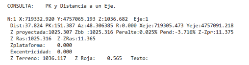
|